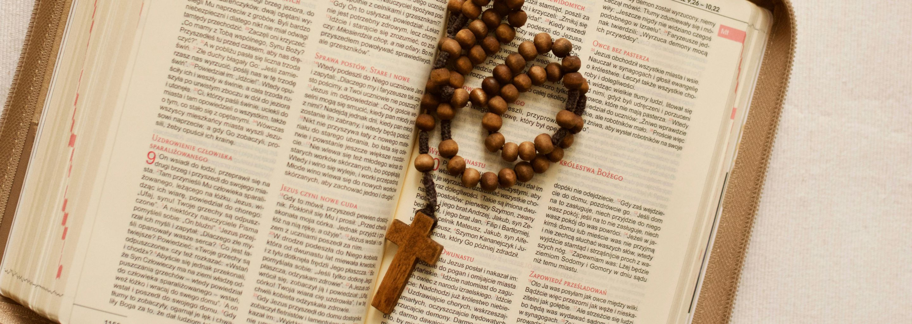

Österreich
Infos zu Karmelveranstaltungen in Österreich
Aktuelle Hinweise zu Veranstaltungen des Karmel in ganz Österreich, wie Vorträge, Einkehrtage, Gottesdienste und besondere Feiern.
Rundbriefe
Die Karmeliten in Österreich sowie die Edith Stein Gesellschaft Österreich verschicken regelmäßig Online Exerzitien, Online Novenen sowie Veranstaltungshinweise per Mail. Durch das Formular unten können Sie sich für den kostenlosen Erhalt unserer Aussendungen anmelden und dabei auswählen, welche unserer Angebote Sie erhalten möchten (und welche nicht!). Natürlich können Sie sich jederzeit aus dem Verteiler austragen lassen.
Veranstaltungen
Österreich
Aktuelle Hinweise zu Veranstaltungen des Karmel in ganz Österreich, wie Vorträge, Einkehrtage, Gottesdienste und besondere Feiern.
Wien
Neuigkeiten, Termine und Einblicke aus dem Wiener Karmelitenkonvent, inklusive liturgischer Angebote und Gemeinschaftsleben.
Linz
Informationen zu Veranstaltungen, geistlichen Angeboten und Aktivitäten des Karmelitenkonvents in Linz.
Graz
Aktuelle Termine, Gottesdienste und besondere Initiativen des Karmelitenkonvents in Graz
Online
Nachrichten über digitale Angebote wie Vorträge, Gebetszeiten und Exerzitien, die ortsunabhängig online mitverfolgt werden können.
Edith Stein

Edith Stein
Hinweise auf Veranstaltungen und Informationen der Edith Stein Gesellschaft
Friedensgebet
Einladungen zu gemeinsamen Gebetszeiten und Novenen im Anliegen des Friedens, inspiriert von der Spiritualität der heiligen Edith Stein.
Online

Exerzitien Online
Begleitete Online-Exerzitien zur geistlichen Vertiefung in den liturgischen Zeiten des Advents und der Fastenzeit.
Skapuliernovene
Gebetsreihe zur Vorbereitung auf das Skapulierfest, mit täglichen Impulsen und gemeinschaftlichem Gebet online.
33 Schritte
Geistlicher Weg der Marienweihe in 33 Tagen, mit täglichen Betrachtungen und Anleitungen zur Vertiefung der Christusbeziehung.

Jesus-Gebet
Informationen und Einladungen zu kontemplativen Gebetstreffen und zum Jesusgebet.